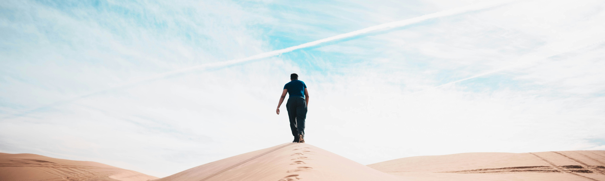

연혁
history

2020's
2023
- 사상~해운대 고속도로 민간투자사업 수주
- GS이니마, 슈웨이하트(Shuweighat) 4단계 해수담수화 사업 수주
- GS건설 R&D센터 개관
- 허윤홍 사장, 신임 CEO 취임
2022
- 주택 브랜드 자이(Xi) 출범 20주년
- 국내 건설사 최초 '그린수소 플랜트 모듈' 미국 수출
- 100% 리사이클링 소재로 제작한 친환경 조끼 전 현장 도입
- 주거환경개선 토털 솔루션 '하임랩(HEIMLAB)' 런칭
- 자이가이스트, 선진 프리패브 컨셉트하우스 오픈
2021
- 공정거래 자율준수 프로그램(CP) 도입 선포
- 서부간선지하도로 개통
- 호주 North East Link 민간투자사업 수주
2020
- 영국 철골 모듈러 전문회사 Elements Europe Ltd. 인수
- 폴란드 목주 모듈러 전문회사 Danwood S.A. 인수
- 싱가포르 LTA, 5,500억원 규모 ITTC 수주
- 서울~문산 고속도로 개통
2010's
2019
- GS건설 '영업익 1조클럽' 첫 가입
- 쿠웨이트 도하링크(Doha Link) 개통
- 베트남 Vam Cong Bridge 개통
- 우크라이나 Zakarpattia 태양광 발전사업 수주
- 터키, 14억달러 규모 플랜트 투자사업 참여
2018
- 세계 최초 경사주탑 노량대교 개통
- 문재인 대통령 싱가포르 T301현장 방문
- 탄자니아 New Selander 교량 공사 수주
- Numancia 하수처리장 운영 사업 수주 (Sagra Alta, 스페인)
2017
- 방글라데시 - Gopalganji 400kV Transmission Line 수주
- Ruwais Refinery West (RRW) 복구공사 수주
- KAKAO 인공지능 홈 IoT 서비스 업무협약 체결
- GS INIMA, 칠레 ATACAMA 지역 해수담수화 시설공사 수주
2016
- 싱가포르 T301 차량기지 프로젝트 단독 수주 (SGD 19.88억)
- 이란 사우스파스 11, 14 단계 가스 유전 개발 프로젝트 MOU 체결
- 싱가포르 안전혁신학교 개교
- 보츠나와 모루풀레 B 2단계 석탄화력 발전 프로젝트 수주
2015
- 베네수엘라 피리탈 가스 플랜트 프로젝트 단독 수주(26억불)
- 2015 DJSI Asia Pacific 6년 연속 편입
- 미국 ENR지 선정 2015년 글로벌 250대 건설사 중 26위 선정
- 싱가포르 ASAC(Annual Safety Award Convention) 대상 수상
2014
- 종로구 청진동 그랑서울로 사옥 이전
- 48억불 규모 쿠웨이트 클린 퓨얼 프로젝트 수주 (당사분 16억불)
- 60억불 규모 이라크 카르발라 프로젝트 수주 (당사분 23억불)
2013
- 제12대 임병용 대표이사 취임
- 제8회 아시아건설종합대상 시상식 - 상생협력부문 종합대상 수상
2012
- 비젼 2020 선포
- 소형 주택 브랜드 '자이엘라(Xi-Ella)' 런칭
- 스페인 이니마 社 인수
- 가장 신뢰받는 기업상 4년 연속 수상
- 빌딩스마트협회 주최, BIM Awards 2012 시공부문 대상 수상
2011
- 가장 신뢰받는 기업상 3년 연속 수상
- GS건설 ‘다우존스 지속가능경영지수월드’에 2년연속 편입
- 2011 대한민국 지속가능성 대회 - KRCA 최초발간부문 수상
2010
- 새로운 조직문화 창출을 위한 핵심가치 선포
- 가장신뢰받는 기업 2년연속 수상
- 2011년 세계적 유명 건설전문지 ENR지에 의해 세계36위 건설사로 선정
2000's
2009
- 제 11대 대표이사 허명수 사장 취임
- 제 13회 살기좋은 아파트상 : '반포자이' 대통령상 수상
- 2009 한국건축문화대상 : '부띠크모나코' 민간부분 대상 수상
- 제5회 대한민국 토목, 건축대상 : '타임스퀘어' 종합건축 대상 수상
2008
- '2008 퍼스트브랜드 대상' 시상식 : '자이' 아파트 부문 3년 연속 1위
- 제42회 납세자의 날 '1천억 고액 납세자탑' 수상
2007
- 미국 ENR지 선정 2007년도 세계 225개 건설사 중 31위 선정
- 제41 납세자의 날 '금탑산업훈장' 수상
2006
- 미국 ENR지 선정 2006년도 세계 225개 건설사 중 31위 선정
- 한국 CFO대상 및 한국 재무 혁신기업대상 수상
- 국내 건설업계 최초, 국제 IT시스템 품질평가기준 CMMI 레벨4 인증획득
2005
- GS건설주식회사로 상호 변경
- 2005 한국서비스 품질지수 (KS-SQI) 1위 기업 시상식 - 아파트 부문 1위
- 서울시 청계천복원공사 은탑산업훈장
2004
- 시가총액 1조원 달성
- '신월성 원자력 1,2호기 주설비 공사수주'로 원전사업 진출
- '기업지배구조 헌장' 제정
2003
- 'VISION 2010' 선포
- '2004년 환경경영대상' 건설업 부문 대상 수상
- '자이' 2004 소비자 웰빙지수 1위 브랜드 선정
2002
- 허창수 대표이사회장 선임
- 제10대 김갑렬 사장 취임
- '주택건설의 날' 대통령표창 수상
- 한국전력문화회관 '서울특별시 건축상' 수상
- 新주택브랜드 "Xi(자이)" 런칭
2001
- 증권거래소 선정 기업지배구조 모범기업 최우수업체 선정
- 대한매일 하반기 히트상품 아파트부문 선정
- 세계광고대상 기업 PR 부문 우수상 수상
2000
- 하수처리 "BIO-NET" 공법 건설 교통부 신기술 지정
- 서해대교, 대통령 표창 수상
1990's
1999
- LG건설, LG 엔지니어링 합병
- 증권거래소 선정 우수공시상 수상
1998
- 제9대 민수기 사장 취임
- ‘98 한국건축문화 대상’에 “고려포리머 사옥” 본상 수상
-
LG-HP SUNFLOWER INTERNATIONAL VILLAGE,
베트남 하이풍 인민위원회 표창 수상
1995
- LG건설로 사명 변경
- 국내최초로 자체감리팀 구성
1994
- ISO(국제표준화기구) 9001 국제품질 경영규격 인증 획득
- “한국형 중소도시 폐기물 소각시스템” 기술 KT마크 (한국신기술) 획득
- 중국건축공정총공사와 건설협력 약정 체결
1980's
1988
- 럭키금성 美州본부 기공
- 사우디 이맘대학교 스포츠센터 준공
- 역전빌딩으로 사옥이전
1987
- 럭키금성 트윈타워 준공
1984
- 해외건설 10억불 건설수출탑 수상
- 미국 현지법인 Lucky Development International Inc. 설립
1981
- 기업공개
1970's
1977
- 럭키해외건설주식회사 설립
1975
- 럭키개발주식회사로 상호 변경
1970
- 락희(樂喜)개발주식회사 창립